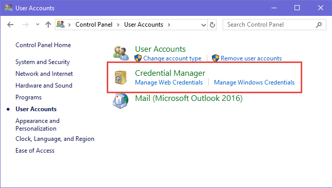
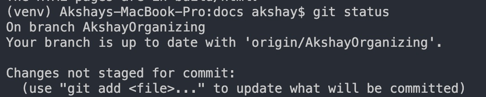

Git Workflows¶
If \(\sigma_{1}\) equals \(\sigma_{2}\) then etc, etc.
This tutorial covers how to keep up with the workflow when working with SPIE.
As of yet, this library exists solely in the github.fit.edu domain. And as such, you will need to add you credentials in order to get access to this library.
If you are a new user, first contact the project admin: Akshay Aravamudan at aaravamudan2014@my.fit.edu to get access.
This tutorial is divided into two sections:
Starting from scratch.
Pushing code after project setup.
1. Starting from scratch¶
This part of the tutorial ensures that new users will be able to clone and develop on the repository with ease.
If you are creating a new directory to contain the repository, change directory (cd) into the directory, and enter the following command to intialize the git repository.
git init
Once git has been initialized in the directory, since we are working with the github.fit.edu domain, you will have to enter your TRACKS credentials.
Note: for windows users, you can add github.fit.edu credentials by simply adding it in the windows credential manager. If there is already a credential for github.fit.edu, ensure that the username and password is up to date.
If you have never entered credentials for github.fit.edu, the following command will ensure that you dont have to re-enter the username/password.
git config --global credential.helper store
Now, you can clone the project from https://github.fit.edu/aaravamudan2014/split-population-survival-exploits.git as follows
git clone https://github.fit.edu/aaravamudan2014/split-population-survival-exploits.git
If you do not have saved credentials, you will be prompted to enter you TRACKS username and password.
2.5 Adding project to package list in an environment¶
Once the SPIE repository has been downloaded to the local system, one still has to download it as a package to enable using it as a library. This should preferrably done in a virtual enviroment (pip or conda). More details on how to do this can be found :ref: _install_repo_ref.
The following steps assume that you have downloaded all the requisite packages in your local system and can run the test file
2. Working on a branch¶
The current workflow for this project, given that there are few developers, involves creating your own branch and pushing all changes to this branch.
Branch naming convention
1. Words are separated by camel case.
2. First word is the developer name.
3. Second word is the task that is being accomplished by the branch.
For instance, if I wanted to work on documentation, I would name the branch AkshayDocumentation
git checkout -b *branch-name*
This command will create a branch if it does not already exist. It also checks out the branch that you have selected. This means that you can start working on your task. For confirmation you can enter the following command to check which branch you are at.
git status
This shows that I am currently working on the AkshayOrganizing branch, branched out from origin when it was created.
So at this point you have created a local branch. The upstream repository (hosted by github.fit.edu) still is not aware of your newly created branch. To do this, we set the upstream using the following command which does a trivial push upstream.
git push -set-upstream origin/*branch-name*
Once you have created a remote branch, you can visit the associated github page: https://github.fit.edu/aaravamudan2014/split-population-survival-exploits.git and find the branch you have created.
3. Pushing code after project setup¶
After having setup the branch and worked on your code changes, you have to push the code to the branch upstream.
First add all files to be staged for commit. Change directory to the base directory (directory containing READE.md) in the repository. This ensures that all relevant files are added. Note that files with extensions contained in the .gitignore file will be ignored.
** Note: If there is any file with size above 100mb, include it in the .gitignore file. Pushing it upstream may cause some issues that are difficult to reverse.**
git add *
git commit -m "Enter your commit message here"
git push

4. The .gitignore file¶
Since the gitigore file is local to your branch, make sure the following is contained in the .gitignore file
splitPopulationSurvivalExploits/src/data
venv
*.pem
docs/source
docs/Makefile
docs/make.bat
*.h5
splitPopulationSurvivalExploits/src/temp_storage
splitPopulationSurvivalExploits/src/splitPopulationSurvivalExploits.egg-info
5. The daily updates¶
Since we have multiple developers working on the repository through multiple branches. Once in a while the master branch will be updated. To make sure that your branch is up to date, enter the following git commands.
git checkout master
git pull
git checkout *your branch name*
git merge master

{kind=link}
{kind=link}
{kind=link}